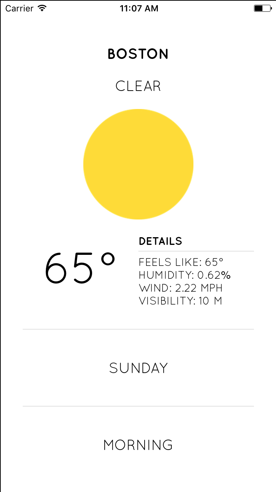

<!--
Copyright (c) 2016 Google Inc.

Licensed under the Apache License, Version 2.0 (the "License"); you may not
use this file except in compliance with the License. You may obtain a copy of
the License at

    http://www.apache.org/licenses/LICENSE-2.0

Unless required by applicable law or agreed to in writing, software
distributed under the License is distributed on an "AS IS" BASIS, WITHOUT
WARRANTIES OR CONDITIONS OF ANY KIND, either express or implied. See the
License for the specific language governing permissions and limitations under
the License.
-->
<link rel="import" href="../../step-style.html">

<dom-module id="step-1">
  
  <template>
    <style include="step-style"></style>

    <p>We know we can use Angular to build NativeScript apps, or simply build with "vanilla" NativeScript using JavaScript or TypeScript. But did you know that, due 
      to an amazing community effort led by Developer Expert Igor Randjelovic, we can now use Vue.js as a framework around which to build our apps. 
      Vue.js is an up-and-coming, lightweight JavaScript framework that is gaining in popularity. Learn more <a href="http://www.vuejs.org">here</a>. 
    </p>

    <p>In this Snacklab, we are going to build a simple weather app, based on a <a href="https://mir-s3-cdn-cf.behance.net/project_modules/disp/011ad422645245.5631618fd6daf.gif">design</a> that caught my eye on Behance. This clean weather app will allow us to learn how to 
    geolocate our device to get latitude and longitude, and we will use the Forecast.io REST API to get that location's weather. Building a weather app is a great proof-of-concept for any mobile app framework, so let's get started. In the end, this app will look like this:</p>

    <p>
      
    </p>

    

    
  </template>
  <script>
    Polymer({
      is: "step-1"});
  </script>
</dom-module>
